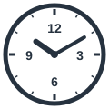
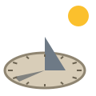
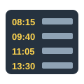
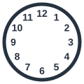
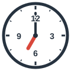
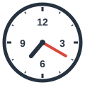
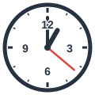

clock
ساعة (حائط أو مكتب)
The clock on the wall is five minutes fast.
ساعة الحائط مُقدَّمة خمس دقائق.
Clocks & Planning Tools
مرّر الماوس على السماعة أو اضغط عليها لتسمع النطق. السماعة الكبيرة نطق أمريكي (وهو المكتوب بالرموز)، وزر UK نطق بريطاني.

ساعة (حائط أو مكتب)
The clock on the wall is five minutes fast.
ساعة الحائط مُقدَّمة خمس دقائق.
ساعة يد
She looked at her watch and left the room.
نظرت إلى ساعتها وغادرت الغرفة.
ساعة معصم
My grandfather gave me his old wristwatch.
أهداني جدي ساعة يده القديمة.
منبّه
I set my alarm clock for six.
ضبطت المنبّه على السادسة.
ساعة إيقاف
The coach timed the race with a stopwatch.
قاس المدرب زمن السباق بساعة إيقاف.
مؤقّت
Set a timer for twenty minutes.
اضبط مؤقتًا على عشرين دقيقة.
ساعة رملية
The sand in the hourglass ran out.
نفد الرمل في الساعة الرملية.

مزولة (ساعة شمسية)
People used a sundial to tell the time.
استخدم الناس المزولة لمعرفة الوقت.
تقويم
I marked the meeting on my calendar.
سجلت الاجتماع في تقويمي.
مفكرة تخطيط
She writes her tasks in a weekly planner.
تكتب مهامها في مفكرة أسبوعية.
جدول مواعيد
My schedule is full this week.
جدولي ممتلئ هذا الأسبوع.

جدول زمني (للقطارات والدراسة)
Check the train timetable before you leave.
راجع جدول القطارات قبل أن تغادر.
جدول أعمال
What is on the agenda today?
ما المدرج في جدول الأعمال اليوم؟

وجه الساعة
The clock face has twelve numbers.
يحمل وجه الساعة اثني عشر رقمًا.

عقرب الساعات
The hour hand is the short one.
عقرب الساعات هو القصير.

عقرب الدقائق
The minute hand moves faster than the hour hand.
يتحرك عقرب الدقائق أسرع من عقرب الساعات.

عقرب الثواني
The second hand goes around once a minute.
يدور عقرب الثواني دورة كل دقيقة.
ساعة رقمية
The digital clock showed 7:45.
أظهرت الساعة الرقمية 7:45.
منطقة زمنية
London and Cairo are in different time zones.
لندن والقاهرة في منطقتين زمنيتين مختلفتين.
التوقيت الصيفي
Daylight saving time starts in spring.
يبدأ التوقيت الصيفي في الربيع.
ستسمع كلمة من كلمات الصفحة، فاضغط على الصورة التي تعبر عنها.
الكلمات المميزة هي كلمات هذه الصفحة. اضغط على أي كلمة ليبدأ الصوت منها ويكمل ما بعدها.
Welcome to the Museum of Time. This sundial is our oldest piece, and that hourglass is nearly as old.
مرحبًا بك في متحف الوقت. هذه المزولة أقدم قطعة لدينا، وتلك الساعة الرملية قديمة بالقدر نفسه تقريبًا.
Amazing! And is that huge clock still working?
مذهل! وهل تلك الساعة الضخمة ما زالت تعمل؟
Yes. Look at the clock face. The hour hand is short, the minute hand is long, and the thin red one is the second hand.
نعم. انظر إلى وجه الساعة. عقرب الساعات قصير، وعقرب الدقائق طويل، والأحمر الرفيع هو عقرب الثواني.
My grandfather had a wristwatch with hands like that. These days I only look at the digital clock on my phone.
كان لدى جدي ساعة معصم بعقارب مثلها. أما الآن فلا أنظر إلا إلى الساعة الرقمية في هاتفي.
Phones do everything now. Mine is my alarm clock, my stopwatch, and my kitchen timer.
الهواتف تفعل كل شيء الآن. هاتفي هو منبهي وساعة الإيقاف ومؤقت المطبخ.
Mine also updates itself when I enter a new time zone or when daylight saving time begins.
وهاتفي يضبط نفسه أيضًا عندما أدخل منطقة زمنية جديدة أو عندما يبدأ التوقيت الصيفي.
Do you still use a paper calendar?
هل ما زلت تستخدم تقويمًا ورقيًا؟
No, but I keep a planner. I write my schedule in it every Sunday, along with the agenda for each meeting.
لا، لكنني أحتفظ بمفكرة تخطيط. أكتب فيها جدول مواعيدي كل أحد، ومعه جدول أعمال كل اجتماع.
That's very organized. By the way, what does your watch say? I need to check the train timetable before we leave.
هذا منظم جدًا. بالمناسبة، كم تشير ساعتك؟ عليّ مراجعة جدول القطارات قبل أن نغادر.
الكلمات المميزة هي كلمات هذه الصفحة. اضغط على أي كلمة ليبدأ الصوت منها ويكمل ما بعدها.
Salma is a very organized office manager, and her desk tells the whole story. On the wall above it hangs a large clock with a white clock face. Its hour hand and minute hand move silently, while the thin second hand goes around every minute. Beside her computer she keeps a small digital clock, because her company works with clients in another time zone, and she must remember when daylight saving time changes the difference between them. On her wrist she wears a simple watch, a silver wristwatch that was a gift from her father. Every evening she opens her planner, checks the calendar, and writes the next day's schedule. Before each meeting she prepares a clear agenda, and she checks the train timetable before any business trip. When she needs to focus, she sets a timer for twenty-five minutes. Her colleague once brought her a funny present: a little hourglass. Another friend gave her a tiny model of a sundial, which is useless indoors but looks lovely. At home, an old alarm clock wakes her at six, and she uses a stopwatch to time her morning run.
سلمى مديرة مكتب منظمة جدًا، ومكتبها يحكي القصة كلها. على الحائط فوقه تتدلى ساعة كبيرة بوجه ساعة أبيض. يتحرك عقرب الساعات وعقرب الدقائق بصمت، بينما يدور عقرب الثواني الرفيع كل دقيقة. وبجوار حاسوبها تحتفظ بساعة رقمية صغيرة، لأن شركتها تعمل مع عملاء في منطقة زمنية أخرى، وعليها أن تتذكر متى يغيّر التوقيت الصيفي الفارق بينهما. وفي معصمها ترتدي ساعة بسيطة، ساعة معصم فضية أهداها إياها والدها. وفي كل مساء تفتح مفكرتها، وتراجع التقويم، وتكتب جدول مواعيد اليوم التالي. وقبل كل اجتماع تعد جدول أعمال واضحًا، وتراجع جدول القطارات قبل أي رحلة عمل. وحين تحتاج إلى التركيز، تضبط مؤقتًا على خمس وعشرين دقيقة. وقد أحضرت لها زميلتها ذات مرة هدية طريفة: ساعة رملية صغيرة. وأهداها صديق آخر نموذجًا صغيرًا لمزولة، لا فائدة منه داخل المكتب لكنه جميل المظهر. وفي البيت يوقظها منبه قديم في السادسة، وتستخدم ساعة إيقاف لقياس زمن جريها الصباحي.